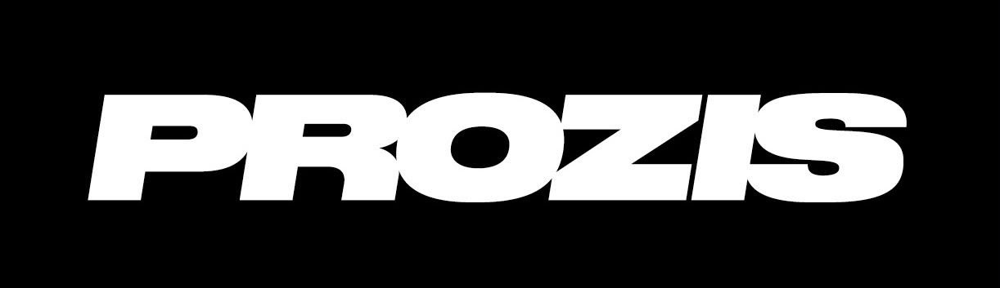

Comment on construitton programme.
Pas de recette magique, pas de plan tout fait recopié à la chaîne. Une méthode simple à comprendre, exigeante à exécuter — expliquée ici, de A à Z.
On ne devine pas. On copie ce qui marche.
La plupart des programmes te sortent des chiffres « en général ». Nous, on part de la pratique réelle : deux ans de vraies diètes disséquées, près de 400 clients suivis, chaque ratio et chaque portion extraits de ce qui a vraiment fonctionné. Le résultat n'est pas un plan type de plus — c'est notre façon de coacher, appliquée à la lettre et validée à la main à chaque envoi.
Quatre étapes, une seule cible : toi.
Le profil
Tout part de toi. Un questionnaire complet : ton objectif (prise de masse, perte de poids, rééquilibrage), ton poids, ta taille, ton âge, ton niveau d'activité — mais aussi tes goûts, ton budget, les aliments que tu détestes, tes allergies, ton temps de cuisine. Rien n'est laissé au hasard : aucun corps, aucune vie ne se ressemblent.
Le calcul
À partir de ton profil, on établit ta cible : combien de calories, et surtout la juste répartition entre protéines, glucides et lipides. Pas une formule générique — des repères calés sur la pratique réelle, ajustés à ton objectif et à ton ressenti. C'est ton corps qu'on vise, pas « un corps moyen ».
La construction
La cible devient une assiette. On compose de vrais repas — plats élaborés, en quantité, à ton goût — qui tombent pile sur tes chiffres, au gramme près. Tout est pensé pour être équilibré, varié et réaliste : rien d'interdit ne passe, et la gourmandise garde sa place. Une diète qu'on déteste ne tient jamais.
La livraison
Avant de partir, chaque programme est peaufiné à la main par Damien ou Yoann. Une portion trop grosse, un aliment mal marié, une redondance : rien ne sort tant que ce n'est pas juste. Tu reçois ton programme prêt à vivre — menus, quantités précises, liste de courses regroupée, conseils. Il ne reste qu'à commencer.
Pas une appli. Une méthode.
Un programme doit tenir dans une vie réelle. On ne réussit pas une diète qu'on déteste.
Ton objectif t'attend.
Réponds au questionnaire, on construit le reste — calibré pour un seul organisme : le tien.
Construire mon programme